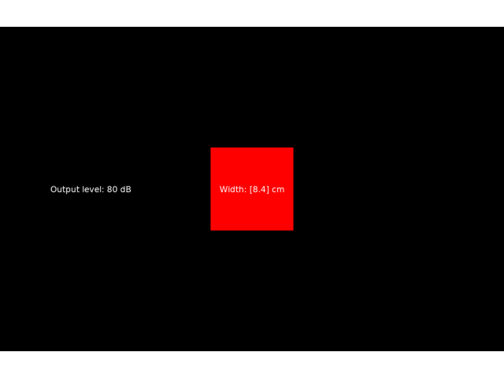

Note
Go to the end to download the full example code.
Sound level test and visual size calibration#
This example tests the audio level and video size. For audio, it produces an 80 db SPL 1000 Hz tone (note that at 1000 Hz, the frequency weighting for SPL measurement shouldn’t matter). For video, it produces a square that should be 10 degrees visual angle and tells you what the physical width should be in cm. This of course depends on correct settings for monitor width, resolution, and distance.
exp_name: LevelTest
date: 2025-05-05 19_55_00.769629
file: /home/circleci/project/examples/experiments/level_test.py
participant: s
session: 0
2025-05-05 19:55:00,769 - INFO - Expyfun: Using version 2.0.0.dev0 (requested dev)
2025-05-05 19:55:00,770 - INFO - Expyfun: Setting up sound card using pyglet backend with 2 playback channels
2025-05-05 19:55:00,975 - WARNING - Expyfun: Mismatch between reported stim sample rate (24414) and device sample rate (44100.0). Nothing will be done about this because suppress_resamp is "True"
2025-05-05 19:55:00,975 - INFO - Expyfun: Setting up screen
2025-05-05 19:55:01,010 - EXP - Expyfun: Set screen visibility True
2025-05-05 19:55:01,027 - INFO - Initialized [1400 900] window on screen XlibScreen(display=<pyglet.canvas.xlib.XlibDisplay object at 0x7f7c8bac7490>, x=0, y=0, width=1400, height=900, xinerama=0) with DPI 69.73
2025-05-05 19:55:01,027 - INFO - Expyfun: Initializing dummy triggering mode
2025-05-05 19:55:01,029 - INFO - Expyfun: Initialization complete
2025-05-05 19:55:01,029 - EXP - Expyfun: Participant: s
2025-05-05 19:55:01,029 - EXP - Expyfun: Session: 0
2025-05-05 19:55:01,044 - EXP - Expyfun: Loading 882000 samples to buffer
2025-05-05 19:55:01,171 - EXP - Expyfun: Starting stimuli: flipping screen and playing audio
2025-05-05 19:55:01,173 - EXP - Stamping TTL triggers: [1]
2025-05-05 19:55:01,187 - EXP - Expyfun: Audio stopped and reset.
2025-05-05 19:55:01,187 - INFO - Expyfun: Exiting
2025-05-05 19:55:01,195 - EXP - Expyfun: Audio stopped and reset.
# Author: Ross Maddox <rkmaddox@uw.edu>
#
# License: BSD (3-clause)
import numpy as np
import expyfun.analyze as ea
from expyfun import ExperimentController, building_doc
from expyfun.visual import Rectangle
print(__doc__)
with ExperimentController(
"LevelTest",
full_screen=True,
noise_db=-np.inf,
participant="s",
session="0",
output_dir=None,
suppress_resamp=True,
check_rms=None,
stim_db=80,
version="dev",
) as ec:
tone = (
0.01 * np.sqrt(2.0) * np.sin(2 * np.pi * 1000.0 * np.arange(0, 10, 1.0 / ec.fs))
)
assert np.allclose(np.sqrt(np.mean(tone * tone)), 0.01)
square = Rectangle(ec, (0, 0, 10, 10), units="deg", fill_color="r")
cm = (
np.diff(ec._convert_units([[0, 5], [0, 5]], "deg", "pix"), axis=-1)[0]
/ ec.dpi
/ 0.39370
)
ec.load_buffer(tone) # RMS == 0.01
pressed = None
screenshot = None
while pressed != "8": # enable a clean quit if required
square.draw()
ec.screen_text(f"Width: {np.round(2 * cm, 1)} cm", wrap=False)
ec.screen_text(f"Output level: {ec.stim_db} dB", wrap=True)
screenshot = ec.screenshot() if screenshot is None else screenshot
t1 = ec.start_stimulus(start_of_trial=False) # skip checks
pressed = ec.wait_one_press(10)[0] if not building_doc else "8"
ec.flip()
ec.wait_one_press(0.5 if not building_doc else 0.0)
ec.stop()
ea.plot_screen(screenshot)
Total running time of the script: (0 minutes 0.517 seconds)